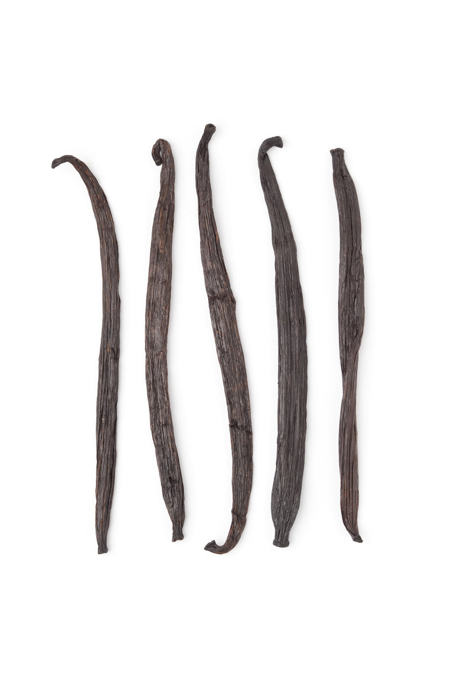

placeholder 01
Experimental · 1 fl oz
Double-Fold Madagascar
A stronger extract built around Madagascar beans. More bean relative to spirit than a typical single-fold bottle. Still homemade, still a trial.
$16 Provisional
Small-batch trials
Kitchen trials from the current vanilla line, limited on purpose. Still the same kitchen rule: alcohol and vanilla beans, not a watered-down grocery bottle. They are not a restock of the 1 fl oz Pure Vanilla Extract on the white label. Names can be renamed later; prices are provisional.

Not watered down. Alcohol + vanilla beans. No chemical flavor components, no added sugars or high-fructose corn syrup, no castoreum. Experimental means the batch is a trial — not that we changed the ingredient list to cheapen it.
Experimental · 1 fl oz
A stronger extract built around Madagascar beans. More bean relative to spirit than a typical single-fold bottle. Still homemade, still a trial.
$16 Provisional
Experimental · 1 fl oz
Same kitchen method, Mexican beans instead of the mainline Madagascar lot. Expect a different profile — that is the point of the trial.
$14 Provisional
Experimental · 1 fl oz
Extract rested on oak. Not a whiskey, not a guarantee of barrel character in every sip of batter — a small rest, labeled honestly as experimental.
$18 Provisional
Experimental · 4 oz jar
A scrapeable paste for bakers who want seeds in the bowl. A jar, not the mainline extract bottle. Trial batch only.
$22 Provisional